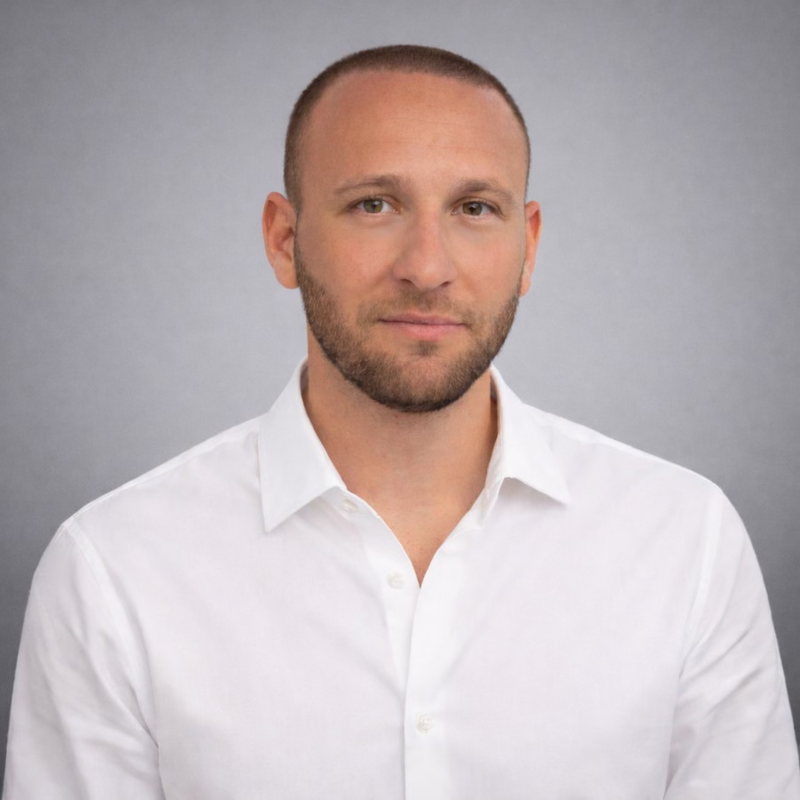

I'm a PhD student in Statistics at Columbia University working with Liam Paninski at the Zuckerman Institute where I focus on 3D computer vision and machine learning methods for analyzing large-scale neural and behavioral datasets. I also earned my BA and MA at Columbia. Alongside my PhD I am Director of AI at Nanose Medical and an AI Research Intern at Goldman Sachs. Previously I interned on the GenAI team at Scale AI.
Before academia I played professional soccer through my teens before joining the team at UNC Chapel Hill.

Academic email: lenny.aharon (at) columbia.edu · Personal email: lenny.aharon5 (at) gmail.com
GitHub · LinkedIn · Twitter · Google Scholar
PhD, Statistics, Columbia University — Expected Jul 2027
Advisor: Liam Paninski
MA, Statistics, Columbia University — May 2025
BA, Mathematics-Statistics & Economics, Columbia University — Jun 2023
Summa Cum Laude, Phi Beta Kappa
University of North Carolina at Chapel Hill — Jun 2019 – May 2021
NCAA Division 1 Men's Soccer, full athletic scholarship
AI Research Intern, Goldman Sachs — Jun 2026 – Present
Fellow, Thinking About Thinking — Mar 2026 – Present
Director of AI, Nanose Medical — Jul 2024 – Present
Human Frontier Collective Specialist -- GenAI, Scale AI — May 2025 – Sep 2025
Research Assistant,
Department of Statistics, Columbia University
— Jan 2023 – Sep 2024
Functional time series and stochastic processes in function spaces.
Investment and Merchant Banking Intern, Lion Tree LLC — May 2022 – Aug 2022